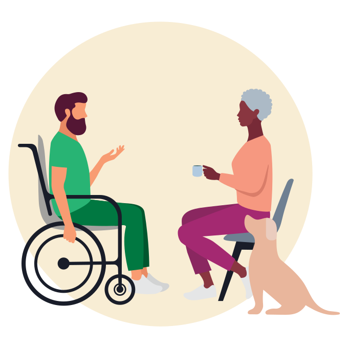

We take in huge amounts of information about disability everyday, sometimes without being aware of it. Literature, photography, video games, films and social media all include different representations of disability/people with disabilities.

Representation of Disability